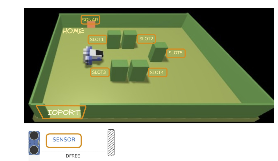

A Maritime Cargo shipping company (from now on, simply company) intends to automate the operations of load of containers in the ship's cargo hold (or simply hold). To this end, the company plans to employ a Differential Drive Robot (from now on, called cargorobot).
The hold is a rectangular, flat area with an Input/Output port (IOPort). The area provides 4 slots to store the containers and a slot named slot5.

In the picture above:
D < DFREE/2, during a reasonable time (e.g. 3 secs).The company asks us to build service named cargoservice that should work as follows.
The cargoservice is able to receive a request to load a container sent by some customer by using the pushbutton of the IOPort.
retrylater, if the IOPort is currently occupied by a container or if the system is Out of service.When the request to load is accepted, the customer must move the container in the sensor area within prefixed amount of time (e.g. 30 secs), otherwise the systems becomes disengaged. Then, the cargoservice uses the cargorobot to move the container from the IOPort to the slot5 (for marking the container) and then to the reserved slot.
The service must also show on the display on the IOPort:
D > DFREE for at least 3 secs (perhaps a failure of the sonar).